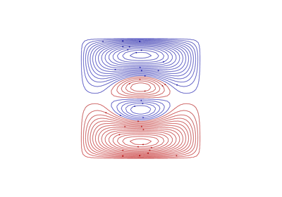
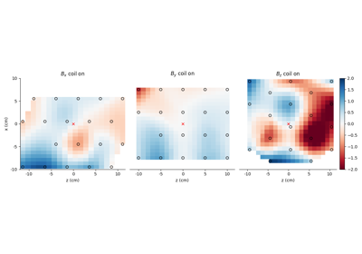
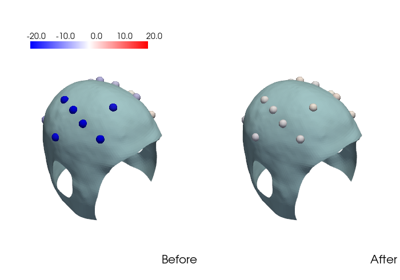
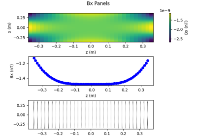
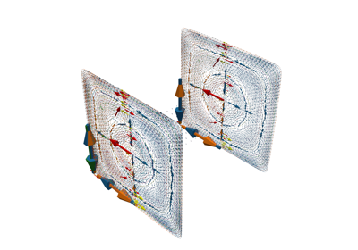
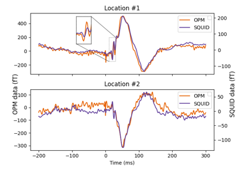

OPM-coils examples¶

01. Design biplanar coils

02. Planar field mapping

03. Helmet field mapping

04. Loading PCB files

05. Compute and visualize magnetic field from PCB
05. Compute and visualize magnetic field from PCB

06. Analyze SEF Data with OPM